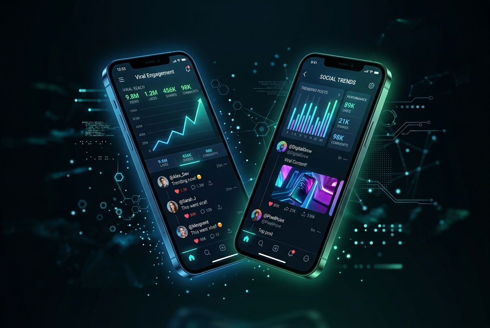
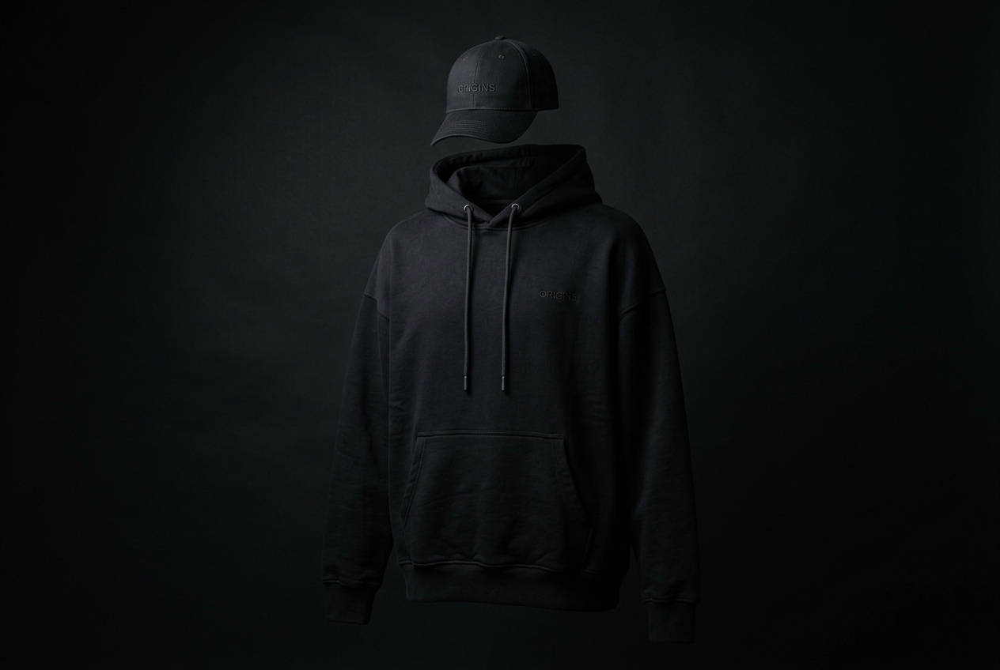

Sosyal Medya Büyümesi | Yakala.
Zirveye Taşıyan:
Stratejik Sosyal
Medya Büyümesi
Erişimi güçlendirir, organik etkileşimi tetikler ve birbirinden farklı konseptlerde (Oyun, Film, Motor, Motivasyon) devasa topluluklar inşa ederiz.

Web Altyapısı | Dönüştür.
Dijital Temeller:
Yüksek Performanslı
Web Mimarisi
Ziyaretçileri sadık kitlelere dönüştüren, kriz anında kurtarılan ve markanıza özel inşa edilen kesintisiz, hızlı dijital platformlar.
Ürün & Markalaşma | Fiziksel Güç.
Marka Somutluğu:
Premium Sokak Giyimi
& Yaşam Tarzı
Marka bağını güçlendiren ve dijital dünyadaki devasa etkiyi fiziksel yaşam tarzına dönüştüren, özel tasarım premium kıyafet (merch) konseptleri.

İletişim | Ortaklık Kur.
Fikrini Dev Bir
Markaya Dönüştür
Projeni büyütmek, sistemini kurmak veya sadece vizyonunu paylaşmak için bana ulaş. Dünyanın her yerindeki projelere açığım.